Ecuaciones de 2º grado
Resolución de ecuaciones de segundo grado
Una ecuación de segundo grado es toda expresión de la forma:
ax2 + bx +c = 0 con a ≠ 0.
Se resuelve mediante la siguiente fórmula:

1. 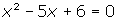
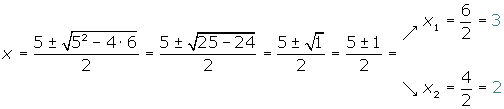
2. 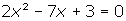
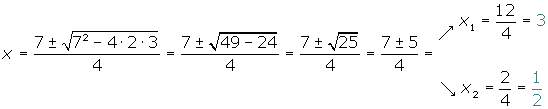
3. 
Si es a < 0, multiplicamos los dos miembros por (−1).
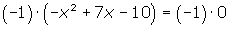

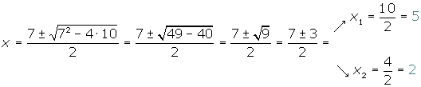
Ecuaciones de segundo grado incompletas
Se dice que una ecuación de segundo grado es incompleta cuando alguno de los coeficientes, b o c, o ambos, son iguales a cero.
Resolución de ecuaciones de segundo grado incompletas
1. ax2 = 0
La solución es x = 0.
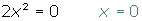
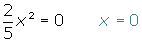
2. ax2 + bx = 0
Extraemos factor común x:
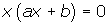
Como tenemos un producto igualado a cero o un factor es cero o el otro factor es cero o los dos son cero.


1. 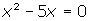
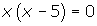

2. 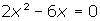
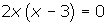
3. ax2 + c = 0
1. En primer lugar pasamos el término c al segundo miembro cambiado de signo.
2. Pasamos el coeficiente a al 2º miembro, dividiendo.
3. Se efecúa la raí cuadrada en los dos miembros.
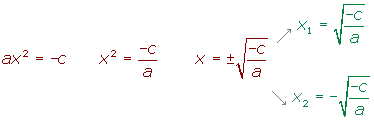
1. 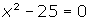
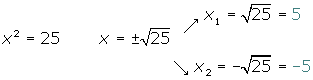
2. 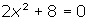
Por ser el radicando negativo no tiene solución en los números reales
Estudio de las soluciones de la ecuación de 2º grado
Dada una ecuación de seguno grado completa:
ax2 + bx + c = 0
b2 − 4ac se llama discriminante de la ecuación.
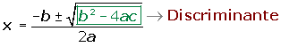
El discriminante permite averiguar en cada ecuación el número de soluciones. Podemos distinguir tres casos:
1. b2 − 4ac > 0
La ecuación tiene dos soluciones, que son números reales distintos.
2. b2 − 4ac = 0
La ecuación tiene una solución doble.
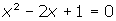
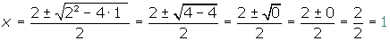
3. b2 − 4ac < 0
La ecuación no tiene soluciones reales.
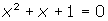
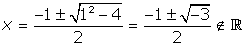
Propiedades de las soluciones de la ecuación de 2º grado
La suma de las soluciones de una ecuación de segundo grado es igual a:
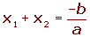
El producto de las soluciones de una ecuación de segundo grado es igual a:
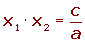
Ecuación de 2º grado a partir de sus soluciones
Si conocemos las raíces de una ecuación, podemos escribir ésta como:

Siendo S = x1 + x2 y P = x1 · x2
Escribe una ecuación de segundo grado cuyas soluciones son: 3 y −2.
S= 3 − 2 = 1
P = 3 · 2 = 6
x2 − x + 6 = 0
Factorización de un trinomio de segundo grado
Dada una ecuación de seguno grado completa:
ax2 + bx + c = 0
Se puede descomponer en factores como sigue:
a · (x - x1) · (x - x2) = 0

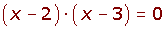